Version 0.9.5.develop.
Version 0.9.5.develop.
Version 0.9.5.develop.
An installer or setup program is not available.
Do not extract the archive into the folder c:\Program Files\ or c:\Program
Files (x86)\ since you will need administrative privileges in some Windows versions. Since Windows keeps
control on these folders other problems might occur like replaced or deleted files.
Extract the Zip archive into a folder like c:\Own Programs\Little Navmap. Then start the program by
double-clicking littlenavmap.exe.
Little Navmap is a 32-bit application and was tested with Windows XP 32-bit, Windows 7 64-bit and Windows 8.1 64-bit.
See here for a list of features.
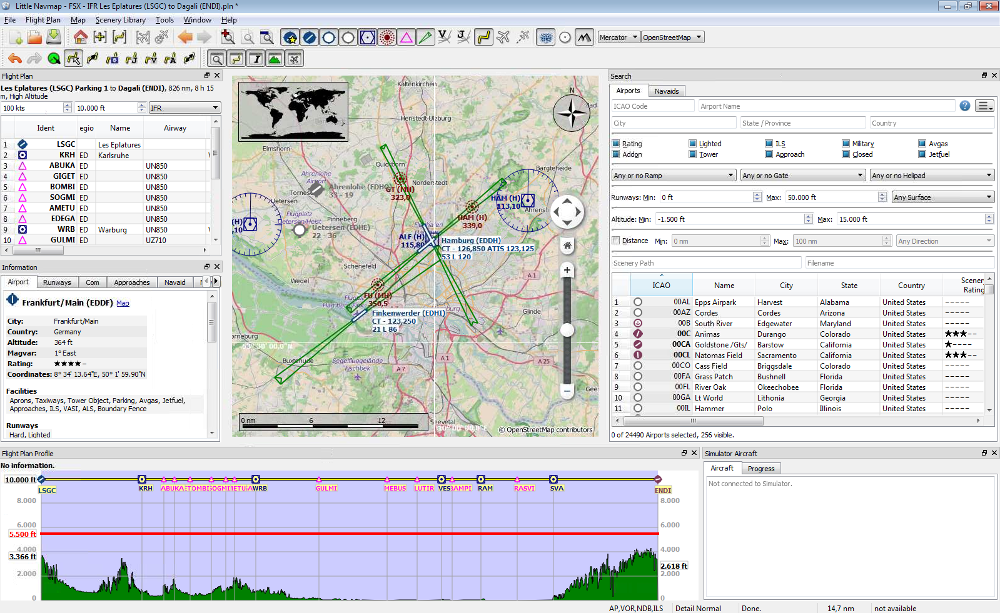
The user interface of Little Navmap consists of multipe dock windows that are arranged around the main window containing the map view. The dock windows can be detached from the main window and also moved around in their docked position. All docks can be closed if they are not needed. You can even drop docks on each other to create a tabbed view (tabs will appear at the bottom of the dock stack). Toolbars are also movable if you click on the left handle and can be closed or undocked from the main window too.
Little Navmap is currently only available in English. I will happily support anybody who would like to
translate the user interface into any other language. Despite using English in the user interface the locale
settings of the operating system will be used. So e.g. on a Germany operating system you will see ,
as a decimal separator instead of the English ..
To avoid confusion: The screenshots in this manual were taken using German locale. This means that comma is used as a decimal separator and dot as a thousands separator.
Units cannot be changed currently and are adapted to aviation needs. So feet, nautical miles, knots and others are used.
World coverage for elevation data is not available for all countries and currently ends at 60 degree north. Also strange artifacts can occur which I cannot influence (like south of the Alps).
The map legend explaining the icons on the map and the Flight Plan Profile is available in the
Information dock window or right here.
Options dialog on the Map
Display tab.
Please note that due to a variety of external data like KML or BGL files that can be loaded by Little Navmap crashes or malfunctions can occur. If that is the case send me the offending file and Little Navmap's log file and configuration which can be located in the about dialog. My e-mail address is shown in the about dialog of Little Navmap too.
TODO
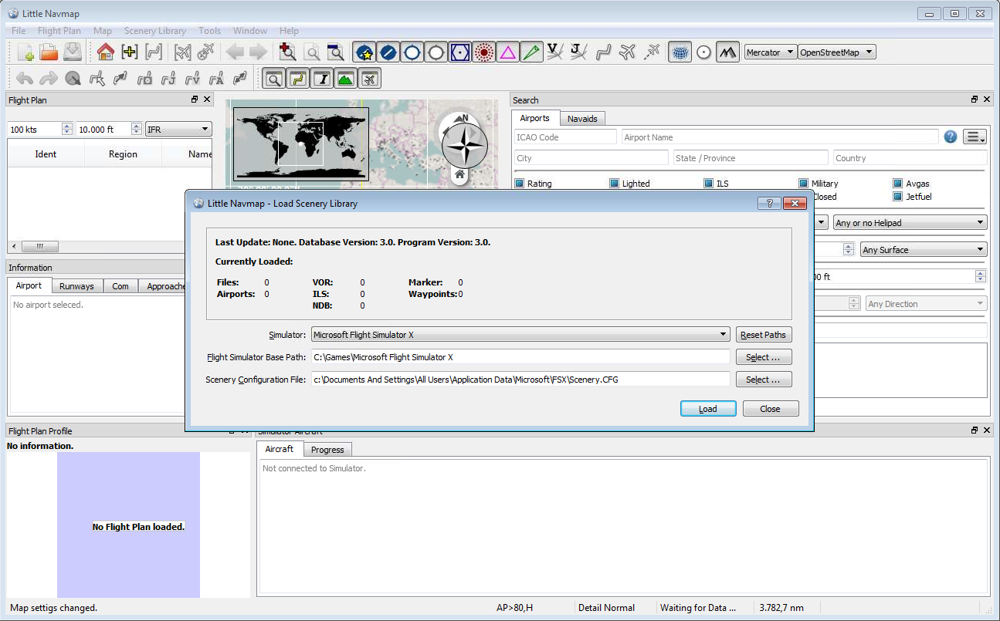
When starting the first time Little Navmap will show the Load Scenery Library dialog. From
there your can select all recognized Flight Simulators and load their scenery libaries into Little
Navmap's internal database. One database is kept for each simulator and it can be changed on the fly in the
Scenery Library menu.
See the description of the Scenery Library for more information.
See chapter Running without Simulator Installation for information how to run Little Navmap without a Flight Simulator installation.
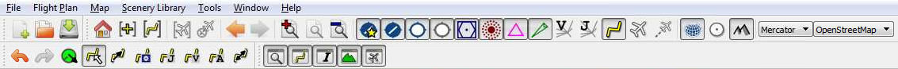
This chapter describes the menu structure of Little Navmap. You will find parts of this functionality on the toolbars as well which are not be described separately. Key combinations can be seen on the menu items and are not listed separately.
You can load, save or create new FSX PLN files. FS9 PLN files are not supported.
An opened flight plan file will be reloaded on startup (reload and centering can be switched off in the
Options dialog on the Startup tab).
You can add one or more Google Earth KML or KMZ file to the map display. All added KML or KMZ files will be
reloaded on startup (reload and centering can be switched off in the Options dialog on the
Startup and User Interface tab).
All loaded KML files can be removed from the map with the menu item Clear KML from Map
Stops loading of map data from the internet. This affects only the OpenStreetMap and OpenTopoMap online map themes.
Allows to undo and redo all flight plan changes.
A parking/gate/ramp, runway or helipad can be selected as a start position on the departure airport. A parking position can also be selected in the map context menu item Set as Flight Plan Departure. If no position is selected the longest primary runway end is selected automatically as start.
Switches flight plan edit mode on the map on or off. See Flight Plan Editing.
Deletes any intermediate waypoints and connects departure and destination using a great circle route.
Creates a flight plan that uses only VOR and NDB stations as waypoints and ensures that reception of at least one station is ensured along the whole flight plan. Note that VOR stations are preferred before NDB and DME stations are not used at all. Calculation will fail if not enough radio navaids can be found between departure and destination.
Uses Jet Airways to create a flight plan. The resulting minimum altitude is set into the flight plan altitude
field. A simplified east/west rule is used to adjust the cruise altitude (can be switched off in the
Options dialog on the Flight Plan tab).
Uses Victor Airways to create a flight plan. Everything else is the same as in Calculate low
Altitude.
Use the value in the altitude field of the flight plan to find a flight plan along Victor and/or Jet airways. If the altitude value is too low calculation will fail.
Swaps departure and destination and reverses order of all intermediate waypoints.
Goes to home area Set Home using the saved position and zoom factor.
Go to the center point used for distance searches.Set Center for Distance Search
Shows the whole flight plan on the map.
Zooms to the aircraft if connected to a Flight Simulator and keeps the aircraft centered.
Removes the aircraft trail if connected to a Flight Simulator.
Jumps forward or backward in the map position history. The complete history is saved and restored when starting Little Navmap.
Increases or decreases details on the map. More details mean more content, more text information and bigger icons.
A flat projection that gives the most fluid movement when using the OpenStreetMap and
OpenTopoMap themes.
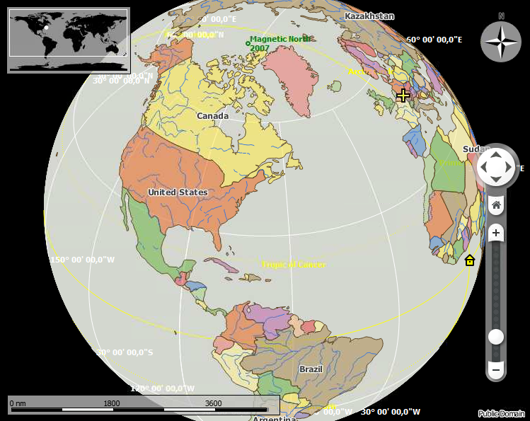
Shows earth as a globe which is the most natural projection. Movement can stutter when using the
OpenStreetMap and OpenTopoMap themes. Use the Simple or Plain
map themes to prevent this.
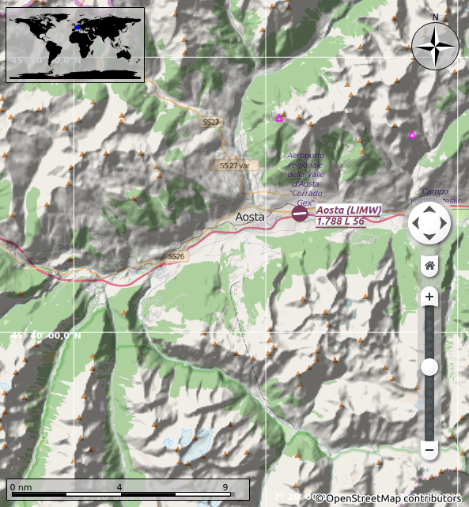
This is an online raster map that includes and hillshading option. Note that hillshading does not cover the whole globe.
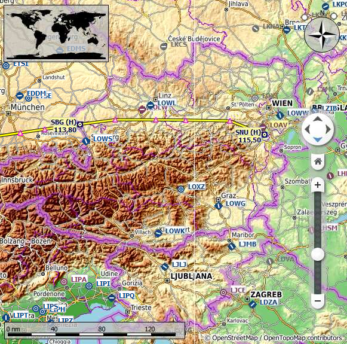
A beautiful online raster map that aims to mimic a paper topographic map as much as possible. Includes hillshading and elevation contour lines at lower zoom levels. Disadvantage is that airports and navaids are hard to recognize in the colorful map.
This is an offline political map using colored countries. The map is simple and included in Little Navmap. Has an option to display city and country names.
A very simple offline map. The map is and included in Little Navmap. Has an option to display city and country names.
If this option is selected add-on airports are always shown independent of the other airport map settings.
Show airports that have at least one runway with a hard surface.
Show airports that only soft surfaced runways.
Shows empty airports. This button can be hidden depending on settings in the Options dialog on the
Map Display tab.
An empty airport is defined as one which has neither parking nor taxiways nor aprons and is no add-on. These airports are treated differently in Little Navmap since they are the most boring of all default airports.
Simply shows or hides these facilities or navaids on the map.
Shows a latitude/longitude grid as well as the meridian and anti meridian (date line) on the map.
Availability of these options depends on the selected map theme. See Theme.
For each Flight Simulator installation or database found one menu entry is created that allows switching of databases on the fly. The menu item is hidden if only one Flight Simulator was found.
This opens Little Navmap's database directory in explorer. See Running without Simulator Installation for more information on copying database files between different computers.
Opens the Load Scenery Library dialog. See Load Scenery Library Dialog for
more information.
Opens the Connect dialog that allows to connect to a Flight Simulator using Little
Navconnect. See Connecting to a Flight Simulator for more information.
This will re-enable all dialogs that were disabled by clicking Do not show this dialog again or
similar text.
Opens the Options dialog.
Opens or closes these dock windows.
Shows or hides these toolbars
Shows this help in a web browser
Shows the map legends in the information dock window. You can also access the navmap legend here.
Shows version, revision about Little Navmap. Also links to the database directory, configuration file and log file.
Information about the libraries Little Navmap uses.
Use click an drag to move the map and the mousewheel to zoom in or out. You can also use the overlay buttons on the right side of the map.
Use the cursor keys to scroll the map and + and - to zoom in and out. Use
Alt+Left and Alt+Right to go forward or backward in the map position history. Do not
forget to activate the map window by clicking into it before using any keys for movements.
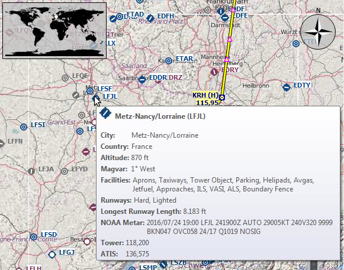
Hovering the mouse over the map will show tooltips for all objects like aiports, VOR, airways and more nearby the cursor. The tooltip is truncated if it gets too long. In that case reduce details or zoom in.
The sensitivity for tooltip display can be adjusted in the Options dialog on the Map
Display tab.
A single click on an airport or navaid shows details in the information dock window. A double click zooms in showing either the airport diagram or the navaid closely and additionally shows details in the information dock window.
The mouse click sensitivity can be adjusted in the Options dialog on the Map Display
tab.
If you zoom in deep enough to an airport the display will change from a single icon to an airport diagram. This shows all taxiways, parking spots, gates, runway and much more.
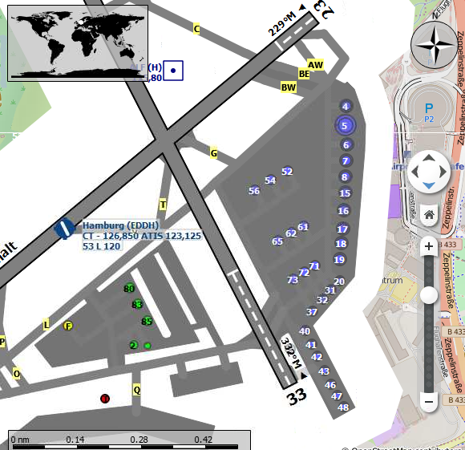 The airport diagram provides more information through tooltips for parking and tower positions.
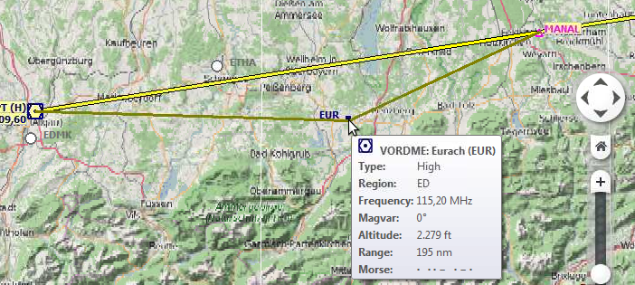 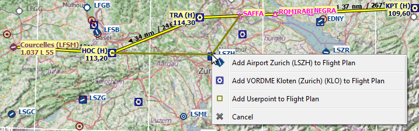
The flight plan editing mode is switched on per default but can be disabled if it gets too annoying e.g. during flight. The following functionality is available:
Shows detailed information in the information panels for the nearest airport or all navaids near the cursor.
Starts a measurment line on the first click. Second click ends measuring and keeps the line. All measurement lines are saved and will be restored on next startup.
Measurement lines use nautical miles as unit. If they are short enough feet will be added as unit so one can measure e.g. takeoff distance for crossing takeoffs and more.
A great circle gives the shortest distance from point to point on earth but does not use a constant course. For that reason the measurement line will indicate the course at the start and end position.
Course is indicated in degrees true. Additional information like ident or frequency will be added to the line if the measurement starts at a navaid or an airport.
A rhumb line is a line of constant course and used between the waypoints of an airway or when approaching a VOR or NDB station. Distance between points is longer that the great circle route.
The course for a rhumb line is normally indicated in degrees true. If the measurement starts at a navaid or an airport that have magnetic variation course will be indicated in degrees magnetic. Additional information like ident and frequency will be added to the line.
This menu item is active if you right click on the end of a distance measurement line. Removes only the selected line.
Shows multiple red range rings around the clicked position. Number and distance of the range rings can be
confgured in the Options dialog on the Map Display tab. A label indicates the distance
of each ring.
Shows a range ring around the clicked radio navaid indicating its range. A label shows ident and frequency.
Active if the click is at the center of a range ring. Removes the ring.
Removes all rings and distance measurement lines from the map.
This is active if the click is at an airport or an airport parking position. It will either replace the flight plan departure or add a departure if the flight plan is empty.
If the clicked object is an airport the default runway will be used as starting position. If a parking position is clicked the airport and parking position will replace the current departure and start position.
This is active if the click is at an airport. It will either replace the flight plan destination or add the aiport if the flight plan is empty.
Adds the clicked object to the nearest flight plan segment. If no airport or navaid is near the clicked position a user position will be added to the flight plan.
Deletes the clicked airport, navaid or user position from the flight plan.
Shows the clicked airport or navaid in the search dialog. The current search parameters are reset.
Sets the center point for the distance search function. See Search Dock Window.
Sets the home postion and zoom value.
Two search tabs are available for airport and navaid (VOR, NDB and waypoints) search.
These tabs contain multiple rows of search filters that can be switched on and off with the drop down hamburger menu button on the top left.
Filters are defined by various controls which are mostly self explaining. Only text filters and the tri state
checkboxes like Lighted, Approach or Closed need extra remarks.
All filters can be used in parallel where all conditions have to be met (and operator). All except
the distance search filter are applied immediately. The distance search is applied after a short delay after each
change.
A short tooltip on the blue question mark gives a quick help about searching.
The standard is to search for entries that start with the entered text.
The placholder * stands for any text. Once a * is included in the term, the standard
search is no longer used.
If the first character in a search box is a - that search is negated (find all entries that do not
match).
Note that all of the above does not apply to numeric fields like Runway length.
Colors and look of these checkboxes vary with theme and operation system. So above might not be precise
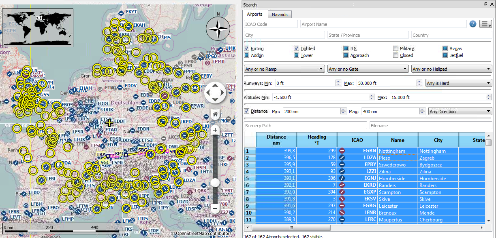
This function allows you to combine all other search options with simple spatial search.
When the checkbox Distance is checked the results will include only airports or navaids that are
within the given minimum and maximum range of nautical miles of the search center. This allows you to quickly
search for an destination that is within the range of your aircraft and fulfills other criteria like having
lighted runways and fuel.
Additionally you can select a direction (North, East, South and West) to restrict the distance search.
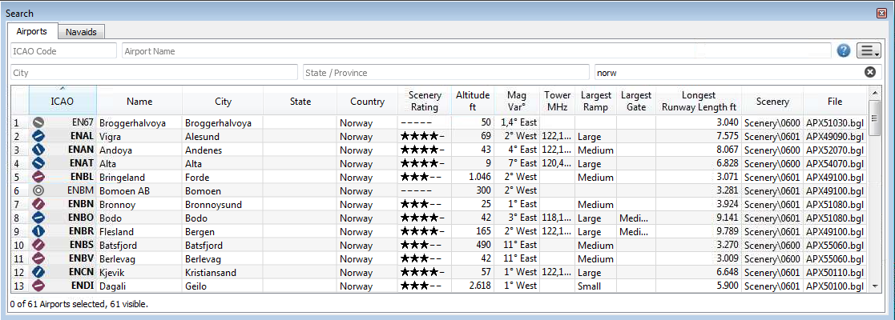 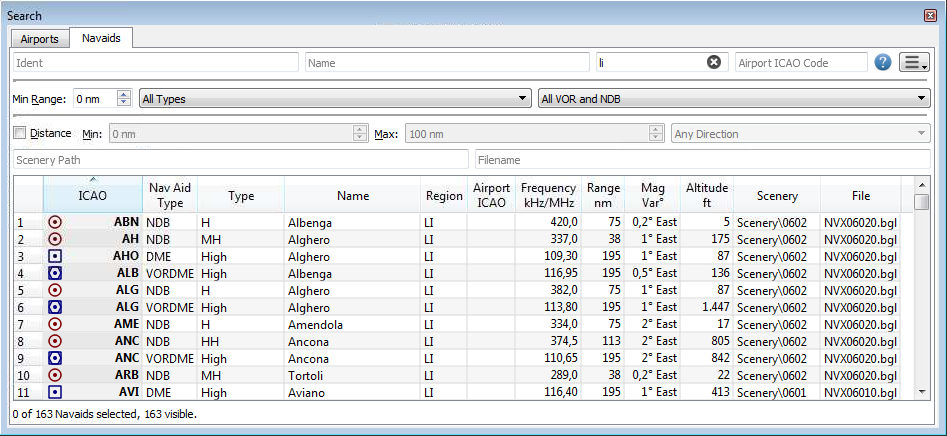
All selected elements in the table view will be highlighted on the map using a black/yellow circle. Multi
selection using Shift- or Ctrl-Click are possible.
If you want to get an quick overview of your results on the map select all the results which will be hightlighted on the map.
The header of the table view allows the following manipulations (the same applies to the flight plan table view):
The program remembers the column widths and positions until Reset View is executed.
A double click on an entry in the table view shows either an airport diagram or zooms to the navaid. Additionally details are shown in the information panel. Single click selects and object and highlights it on the map using a black/yellow circle.
Same as the map Context Menu.
Shows either the airport diagram or zooms to the navaid on the map.
TODO
Deletes all search filters and shows all entries again in the table view.
The table view does not show all entries initially. This menu item allows to load and show all entries. Only a part of the entries is shown again after a search filter is modified or the sort order is changed. The number of all, visible and selected entries is shown at the bottom of the tab.
Same as the map Context Menu.
Copies the selected entries in CSV format into the clipboard. This will consider changes to the table view like column order and sort order.
Selects all visible entries. To select all available entries the function Show All has to be used
first.
Resets the sort order, the column order and column widths back to the default view.
Same as the map Context Menu.
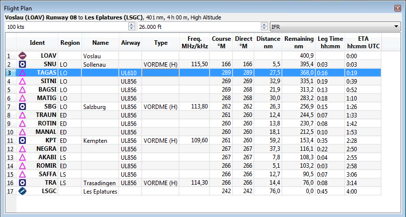
The user Besides the table view there are three input fields on top of this dock window:
A double click on an entry in the table view shows either an airport diagram or zooms to the navaid. Additionally details are shown in the information panel. Single click selects and object and highlights it on the map using a black/green circle.
The header of the flight plan table view has the same functionality as the search result Table View.
Moves all selected flight plan legs up or down in the list.
Deletes all selected flight plan legs.
Same as the map Context Menu.
Shows either the airport diagram or zooms to the navaid on the map.
Same as the map Context Menu.
Will show the range rings for all selected radio navaids in the flight plan.
Otherwise the same as the map Context Menu.
Same as the map Context Menu.
Copies the selected entries in CSV format into the clipboard. This will consider changes to the table view like column order and sort order.
Selects all flight plan legs.
Resets the the column order and column widths back to the default view.
Same as the map Context Menu.
This dock window contains text information about airports in several tabs, information for one or more navaid in one tab, the legend for the navigation symbols and the general map legend (depends on map theme).
All information can be copied into the clipboard as formatted text
A link Map allows to jump to the shown airport or navaid on the map.
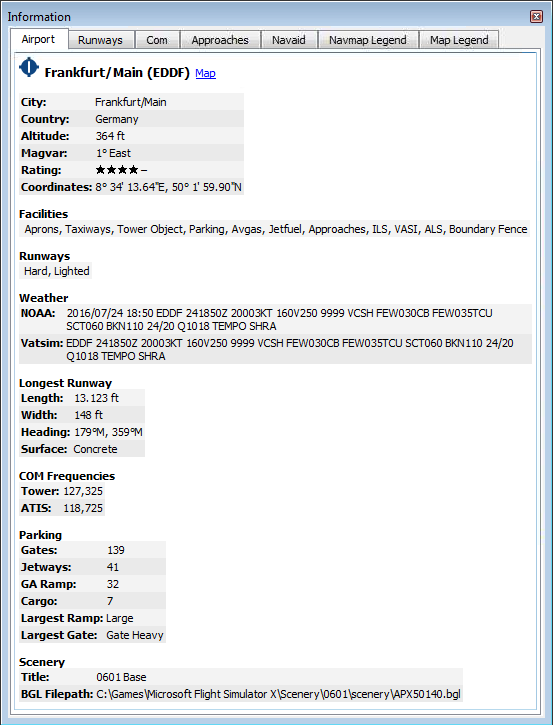 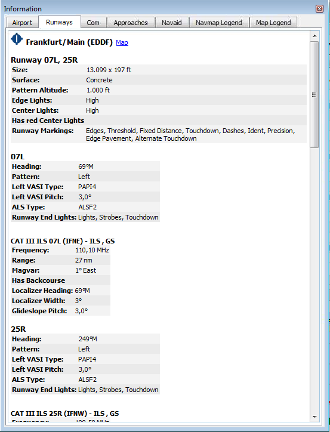 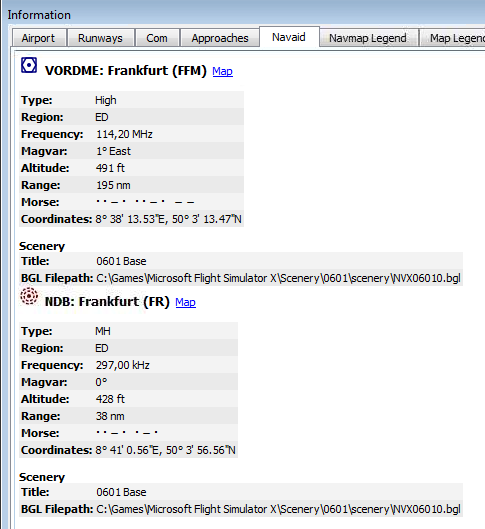
This dock window show information similar to a flight management computer about the user aircraft if connected to the simulator. It contains one tab that shows general aircraft data like gross weight and another tab that displays flight data, route progress and ambient parameters.
See Connecting to a Flight Simulator for more information on this topic.
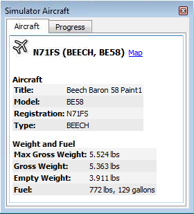 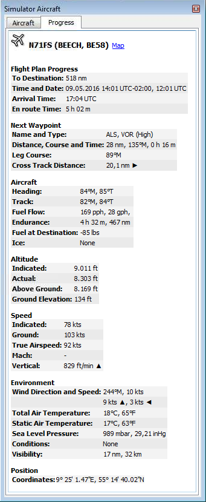
This dock window will show the ground elevation and flight plan cruise altitude together will all flight plan waypoints. It is only available if a flight plan is loaded. If Little Navmap is connected to the simulator the user aircraft is shown too.
Since elevation processing is CPU intense it is done in background after creating or changing the flight plan.
The elevation display will be updated accordingly whenever new data is available. Close the Flight Plan
Profile window if you think this causes problems. All updates will stop then.
Note that the world coverage for elevation data is limited here. Also strange artifacts can occur which I cannot influence (like south of the Alps).
Be aware that the elevation display only covers the route and will not change the depiction if you get off flight plan with your aircraft. Also aircraft climb is not depicted (no aircraft profiles yet). The flight plan is only shown at cruise level.
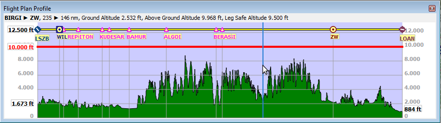
Additional information is shown in a label on top of the window if the mouse is hovered over the diagram. The corresponding position within the flight plan is highlighted on the map too.
Following information is shown in the top label when hovering the mouse over the diagram:
For more information see the Navmap Legend tab in the Information dock window or access
the legend right here.
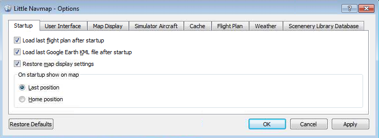
Most options are self explaining and tooltips contain more detailed explanations if applicable. Therefore a more detailed description is not needed.
Note that the button Restore Defaults only restores the options of this dialog back to default.
Other settings like map display or table views are not affected.
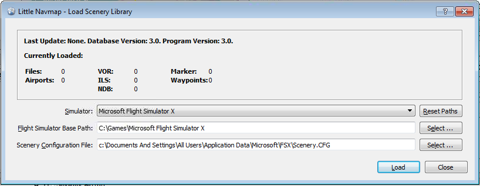
This dialog allows to load the scenery library from all four supported simulators. It shows some information about the currently selected database like number of loaded airports, database version and more.
You can select the simulator in a drop down box which will show the base path and scenery.cfg in two
text edit fields. There are populated with default values first but you can change these to any other valid
location.
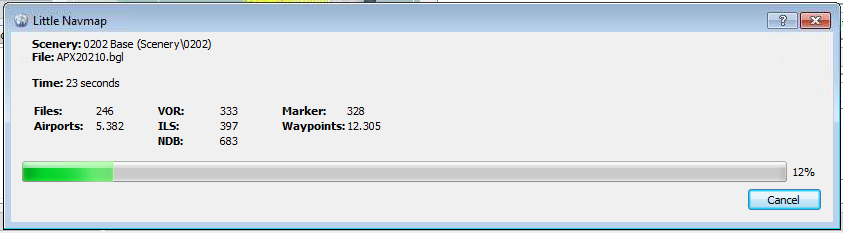
Loading a scenery library can take three to six minutes depending on your setup and amount of scenery add-ons.
You can speed this up by excluding directories containing no airport or navigation data in the
Options dialog on the Scenery Library Database tab.
All airports that are not located in the default scenery directory are considered add-on airports
and will be highligthed appropriately. Directories can be excluded from this behaviour in the
Options dialog on the Scenery Library Database tab.
Main Menu -> Scenery Library -> Show Database Files. This
will open the directory containing the database files in explorer. You will find one or more database files like
little_navmap_fsx.sqlite.
Scenery Library -> Show
Database Files.
Scenery Library should contain an
entry for each copied database file or no entry at all if only one file was copied. Airport icons should be
visible on the map.
[2016-07-24 17:31:40] Server is running on hostname windows-pc (IP address 192.168.1.4) port 51968.
Main Menu -> Tools -> Connect
to Simulator.
localhost.
51968 is the default value.
Simulator Aircraft dock window.
This program is free software: you can redistribute it and/or modify it under the terms of the GNU General Public License as published by the Free Software Foundation, either version 3 of the License, or (at your option) any later version.
This program is distributed in the hope that it will be useful, but WITHOUT ANY WARRANTY; without even the implied warranty of MERCHANTABILITY or FITNESS FOR A PARTICULAR PURPOSE. See the GNU General Public License for more details.
You should have received a copy of the GNU General Public License along with this program. If not, see <http://www.gnu.org/licenses/>.